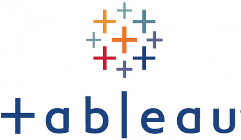
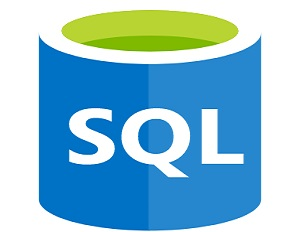
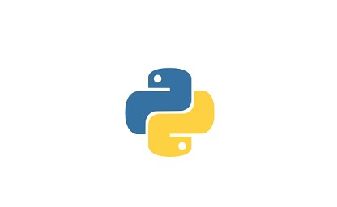

Excel Analytics
Excel dashboards, analysis, and reporting samples.
Driving business growth with Power BI, SQL, Python, Automation, and AI-powered analytics.
I design data-driven solutions that improve revenue visibility, automate operations, and enable smarter executive decision-making across e-commerce, energy, and enterprise environments.
✔ Executive BI Dashboards & KPI Reporting
✔ E-commerce Analytics: GMV, AOV, Conversion, Revenue & Margin
✔ AI-Powered WhatsApp Agents for Business Automation
✔ Forecasting, Advanced Analytics & Process Automation
✔ SQL Data Modeling, ETL/ELT & Azure Data Platform Solutions
Developed executive dashboards to monitor GMV, AOV, conversion rate, revenue, margin, refunds, returns, payments, vendor settlement, and product performance.
Business Impact: Improved leadership visibility, supported pricing and promotion decisions, and enabled faster performance monitoring.
Tools: Power BI, SQL, Data Modeling
View Dashboard ScreenshotBuilt AI-powered WhatsApp agents for real estate maintenance and healthcare appointment booking, using Arabic/English intent detection, automated ticket creation, appointment workflows, and SQL database integration.
Business Impact: Reduced manual request handling, improved customer response time, and created reusable AI automation MVPs for business use cases.
Tools: FastAPI, OpenAI, Twilio, SQL Server, Python
Developed Python-based forecasting models to support revenue prediction, financial planning, and inventory decision-making.
Business Impact: Improved planning visibility and supported proactive business decisions.
Tools: Python, Pandas, Time Series Analysis
I am actively building practical AI solutions that combine business intelligence, automation, and Agentic AI concepts to solve real operational problems.
Current AI focus areas:
• WhatsApp AI agents for customer service automation
• Real estate maintenance request automation
• Healthcare appointment booking automation
• AI-assisted BI, forecasting, RAG, and business workflow automation
• Improved revenue visibility through executive dashboards
• Reduced manual workload by 1,000+ hours annually through automation
• Delivered analytics for finance, operations, HR, sales, and e-commerce teams
• Built forecasting models to support financial and demand planning
• Developed AI-powered business automation MVPs
Explore selected technical samples and dashboards below.
Excel dashboards, analysis, and reporting samples.

Data visualization and business dashboard examples.
Executive dashboards, KPI tracking, and BI reporting.

SQL queries for data manipulation, analysis, and reporting.

Python data analysis, visualization, and forecasting samples.
R code samples for statistical analysis and visualization.